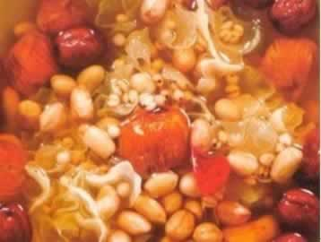
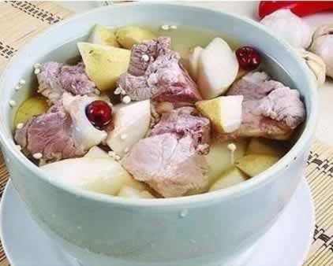

准妈妈常吃红枣有益处
红枣营养丰富，含有丰富的维生素C与多种微量元素。其中，红枣含有的维生素C比苹果、梨、葡萄、桃、柑橘、橙、柠檬等水果均高，十分有益于人体健康，故红枣又有“天然维生素”的美誉，对于孕妇补充营养及胎儿生长发育都有很大的帮助：
1、促进胎宝宝大脑发育：红枣中含有十分丰富的叶酸，而且红枣中含有微量元素锌，有利于胎儿的大脑发育，促进胎儿的智力发展。
2、增强母体免疫力：红枣是营养丰富的滋补品，含有丰富的碳水化合物、蛋白质、维生素及矿物质，对孕妇和胎儿的健康都大有益处。尤其是维生素C，它可增强母体的抵抗力，还可促进孕妇对铁的吸收。
3、健脾益胃：红枣能补益脾胃和补中益气。多吃红枣能显著改善肠胃功能，达到增强食欲的功效。此外，红枣还能补气血，对于气血亏损的孕妇特别有帮助。
4、安神定志：孕妇多食红枣可起到养血安神、舒肝解郁的作用，不妨在平日的汤或粥中加点红枣同食，有养血安神、舒肝解郁的功效。
5、补血：红枣含有较丰富的铁质，孕妇常食用，不仅能防治缺铁性贫血，还有滋补强力的功效。
6、降血压：红枣中含有芦丁，是使血管软化、降低血压的物质，对于妊娠高血压有一定的防治作用。
本周推荐尝试食谱1：
雪耳花生仁汤
推荐理由：蜜枣可以为准妈妈补血，而雪耳是著名的营养品，本食谱清热降火，滋补脾胃。
食谱原料：
雪耳15克，花生仁100克，蜜枣10粒，红枣10粒，洋薏米20克。
制作方法：
1、将雪耳浸开，洗净；花生仁热水浸过，去衣。
2、红枣去核；蜜枣洗净；洋薏米清水浸过。
3、将适量清水煲滚，放入花生、蜜枣、红枣同煲，待花生煲稔时，放雪耳、洋薏米同煲。
4、煲好后下盐调味，即可食用。
本周推荐尝试食谱2：
苹果百合瘦肉汤
推荐理由：百合是润肺、安神、美容的滋补佳品，红枣可补血，莲子的矿物质含量丰富，本粥品适合孕妇食用。
食谱原料：
苹果半个，百合50克、瘦猪肉200克，红枣3个，盐5克
制作方法：
1、苹果去皮、核，洗净，切成块；
2、百合剥开洗净，浸泡一会，瘦猪肉洗净切小块入沸水焯烫后捞出；
3、将适量清水放入锅内，煮沸后加百合、瘦肉、红枣，再沸后改文火煲30分钟，加入苹果再煮10分钟，最后加盐调味即可。